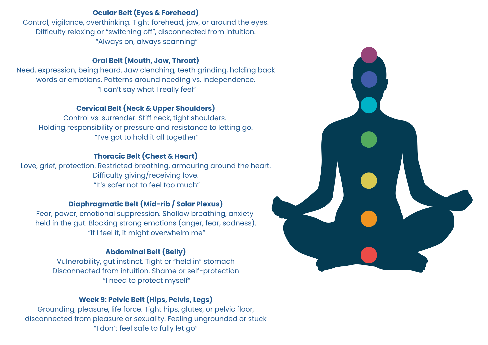
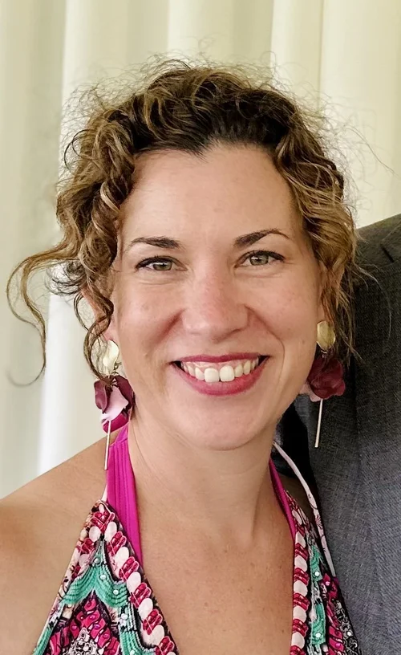
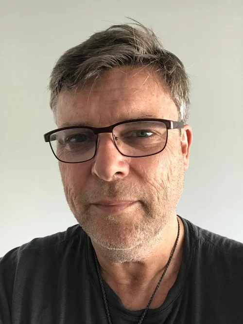
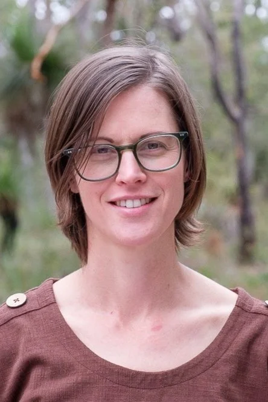
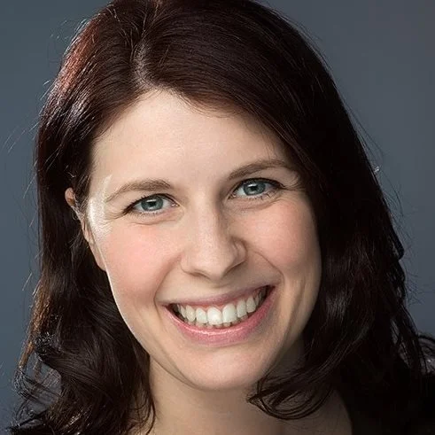
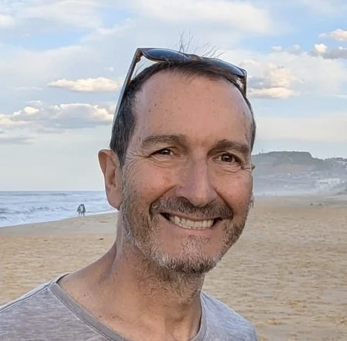
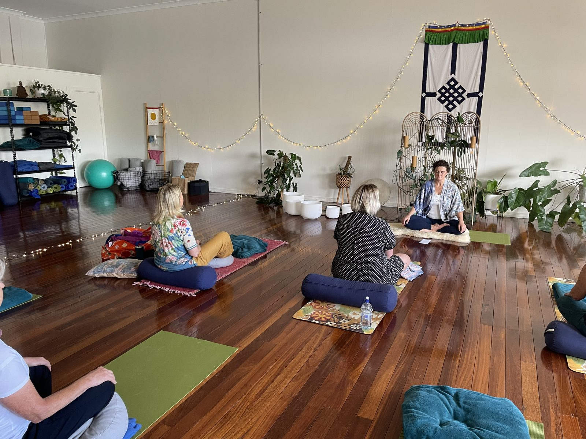
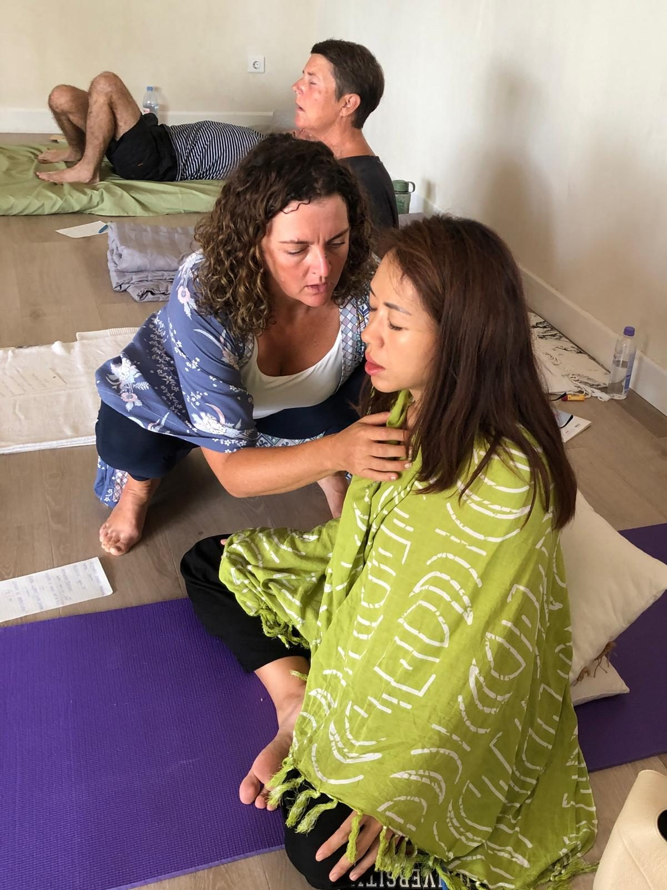
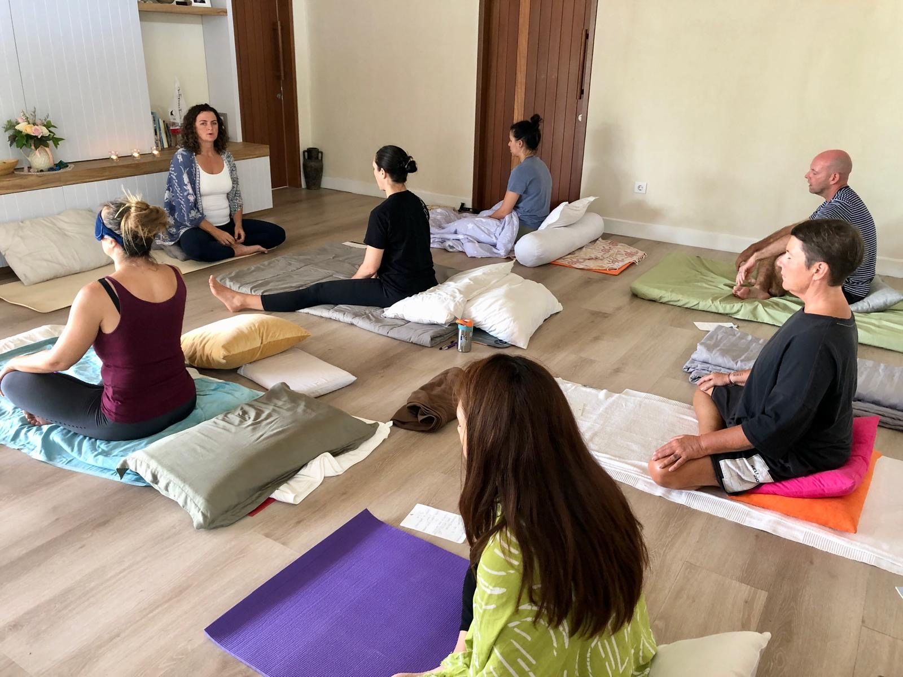
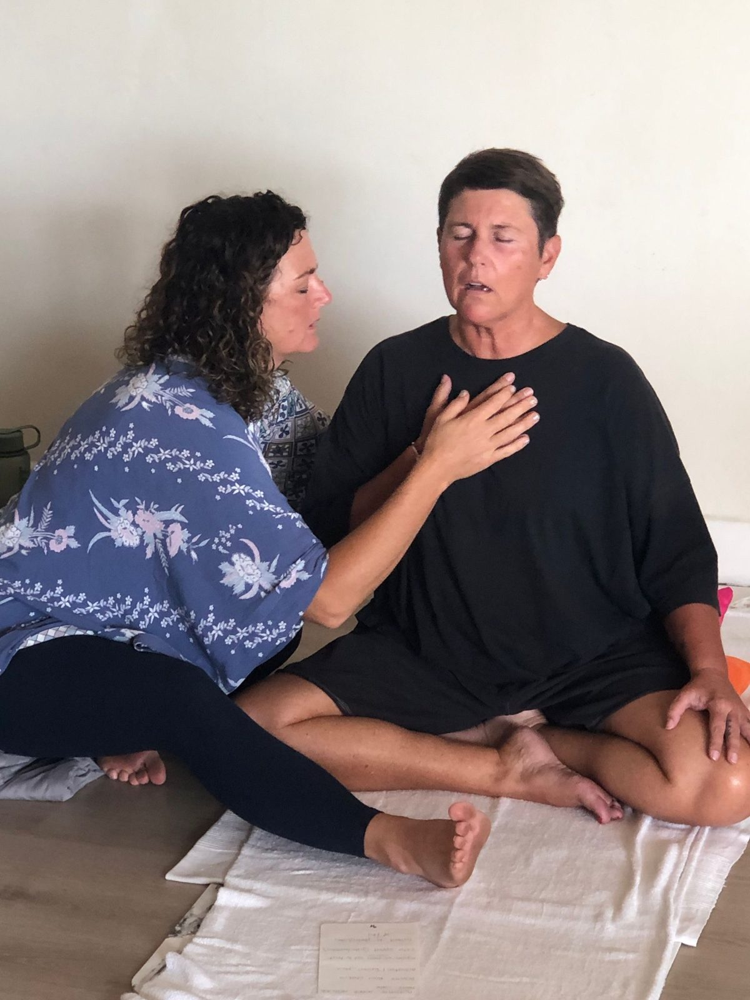

Because your emotions were never meant to be suppressed—they were meant to be recruited
A 9-week 1:1 online program to take your messy, unresolved emotional world and transform it into your power, purpose, and momentum — without feeling gaslit, a trainwreck or a failure.
Begin the JourneyYou want more than just feeling temporary relief.
You want:
You know your patterns and triggers intimately, you just need the right tools and time to finally get to the bottom of the emotional chaos.
You're here because you're ready for more.
You're a grown-ass woman, have some emotional IQ and have done talk therapy, but you still don't know how to deal with the simmering fire in your belly when your boundaries are crossed. In fact, you don't know 100% when your boundaries are crossed.
You speak your truth and tell people how you feel, but your jaw (and butthole) is clenching most of the day, and no amount of physio or chiro shifts it completely.
Your mental capacity to work out the tangled, complex ball of emotions has hit the ceiling (or roof, emotionally).
The reason talking hasn't shifted it is that tension isn't born in your thoughts. It started in your body.
Emotions were never meant to be a burden — they are meant to be your energetic powerhouse.
At 16 years old, I was reading Conversations with God while most of my friends were worried about what to wear on the weekend. Something in me was searching for more.
The day after my 21st birthday—with a one-night stand still asleep in my bed, no less—I dragged myself to a 6am Ashtanga yoga class. Halfway through I had a moment of startling clarity:
I didn't want a regular life.
That moment launched a lifelong obsession with understanding human consciousness, healing and what it really means to be fully alive.
At 22, I became an Ishaya monk and meditation teacher. For the next 17 years I travelled the world teaching meditation and running retreats. Meditation taught me presence and how to quiet the noise of the mind and access a deeper stillness beneath it all.
But there was a problem.
My mind was peaceful.
My body wasn't.
There were stresses, grief, trauma and experiences that my meditation practice never fully helped me process. In some ways, I had become very skilled at rising above difficult emotions without actually moving through them.
Then Breathwork entered my life.
And everything changed.
Breathwork gave me access to the wisdom stored in my body. The grief of losing my father. The stress of surviving a tornado that collapsed the roof of the youth centre I managed. The pain of an abusive relationship I hadn't even fully acknowledged to myself.
Not because someone analysed me.
Not because I talked about it endlessly or was a ninja master at letting it go.
Because my body finally had a way to LET MY EMOTIONS IN what my mind had spent years trying to manage.
Today, I combine the stillness of meditation with the transformational power of Breathwork to help mid life women become emotionally bulletproof.
Not by becoming harder.
Not by pretending everything is fine.
But by building the capacity to feel deeply, stay regulated, navigate life's messy moments and meet themselves fully—without collapsing, numbing, exploding or shutting down.
Because life isn't meant to be lived from the neck up. It's meant to be felt.
Emotionally Bulletproof is where that begins.
The Emotionally Bulletproof program is a deep 1:1, high-value Breathwork and somatic container combined with my signature Home Breathwork Method, to empower you to take healing into your hands well beyond the 9 weeks.
You'll learn how to transform your emotions like a boss and support your nervous system at the same time.
This program is a proven path to evicting years of emotional baggage and body tension that's been squatting rent-free in your nervous system.
The 6 Elements of the Biodynamic Breathwork and Trauma Release System (BBTRS®)
The breath is the primary tool, and we use conscious connected breathing to bridge your mind, awareness and body.
Movement and breath are forever married to each other. Movement allows the energy of the breath to flow throughout the body and releases stress and tension.
Your own voice is an instrument and can be used as sonic vibration to shift deeper tension and tightness.
Self-touch and bodywork during online sessions connect your own healing hands with your body, and unlock areas that need deeper exploration.
With the combination of the other four elements, emotion stored within the tension may arise as it is released.
Using conscious connected breathing, we gently unwind from the grip of the mind and our consciousness can awaken. This is where your wisdom and intuition live, and where the deeper transformation and healing occurs.
The 7 Belts of Tension
Our tension has an emotional, mental and physical component. The longer the stress, the more embedded in our system it becomes.

Like a ball of tangled wool, we sometimes don't know where to begin. The great news: there is a framework and system that begins at the heart of the solution — the intelligence of the breath, the nervous system and your body. It knows how it got stuck, and it will find its way out too.
Signature Home Breathwork Method™
Armed with experience, knowledge and tools, my signature Home Breathwork Method puts the practice in your own hands. That's where the magic happens — self-care that genuinely changes how you feel from the inside out. Because you have a PhD-level understanding of your own shit, you just need a helping hand.
Once you truly integrate the arrested, ignored or repressed energy of emotions, they become your greatest asset to fuel the rest of your life.
A Clarity Call to map your personalised 9-week program. Book here.
6 x weekly 2-hour Breathwork sessions that effortlessly drop you from your busy mind into the wisdom and intelligence of the body — which is where the long-lasting healing shifts happen.
3 x Home Breathwork Method sessions, in the comfort of your own home. This is where the rubber hits the road and you become the centrepiece of your shifts.
Journal prompts and emotional gym sessions that are insightful and bring the real-life change you are craving.
Real-time feedback, guidance and support on your sessions, so you can make the real-life change you have been craving.
My 20+ years of experience in yoga, meditation and breathwork at your service, every day, during the 9-week program.
A video vault of somatic meditations so you can diagnose your nervous system and give it the medicine it needs.
Free access to my monthly Online Community Breathwork sessions.
Discounted Breathwork sessions after our 9 weeks together, for whenever you need a tune-up!
Valued at over $3,000 — yours from just $133 per week
Sessions are held over Zoom. Everything is yours to keep and practise for life.
I was relatively new to breathwork and didn't know what to expect, but right from the first session Hridaya made me feel at ease, and I experienced very deep breakthroughs and insights from the get-go. I guess I never truly knew how to breathe before Hridaya showed me.

Hridaya is a great guide to BBTRS and inner trauma work. Her approach is intuitive, present, playful, wise and fully attentive, so it was very easy to trust and let go into the process. It was deep work, but it unfolded easily and gently, and the effects have lasted.

Hridaya is an outstanding breathwork facilitator. She creates a safe, supportive and loving space in which to unravel and then rebuild myself, ready for life. Each time there's a profound shift, a letting go, and a reinvigorated energy for life.

If you're considering booking with Hridaya, I would really encourage you to go for it. Her ability to make me feel safe, hold the space and intuitively guide me to some fascinating results was priceless. I don't think I would have unlocked some of my recent healing without her.

I am very new to breathwork. I had a course of 8 sessions with Hridaya and was amazed after every session how grounded, peaceful and healing they were. I was surprised how effective it was even over Zoom, and I've significantly opened up and let go of a lot of stress.

Apply with an easy, no-pressure chat with me, Hridaya, to see if we're a good fit.
Book a Clarity CallIf I can't provide you with a clear, tangible solution to your current problems on the call, then we don't work together (that's it!).
The Breathwork style is called conscious connected breathing, and I am an Advanced Practitioner with Biodynamic Breathwork and Trauma Release System (BBTRS). This is a trauma-informed Breathwork training organisation that is well respected in the Breathwork community. As with yoga, there are many different styles and different ways of sequencing and teaching — however, downward dog is still downward dog! It is similar in the Breathwork world: there are lots of different Breathwork modalities that all use conscious connected breathing, with different approaches, levels of trauma-informed training and teaching styles.
Safety and building your nervous system capacity are the most important aspects of BBTRS.
No, this is not like Wim Hof, though you may experience similar benefits. Conscious connected breathing is a medicine journey (with the medicine being your breath). The journey typically lasts for 45 minutes to 1 hour, but don't worry, you are not breathing in this way the whole time! In that time, you cycle through active (sympathetic nervous system) and passive (parasympathetic nervous system) breathing. Wim Hof is generally 15–20 minutes and includes breath holds.
It is completely natural to feel nervous about Breathwork. Feeling nervous or excited is often a signal your body is making to get your attention, because this is important! It can be uncomfortable, but it is natural. I will be supporting you through every step of the process, and once you have your first session, you will know what to expect for next time.
You may have seen (or heard about) some people in a Breathwork session shaking, moving or crying on social media. This is all a natural part of breathwork. As you breathe deeper, you are bringing more energy into your body. This energy may find stress or tension that has been locked in your body over a long period of time. Because your body is so intelligent, it will find the best way to release that tension and stress, in the form of shaking, movement, crying, laughing or anything else that naturally arises! It's very freeing and liberating.
I say this with love: your mind will never be ready to face your trauma. That is what it is designed to do — keep you safe and comfortable. But your body has been keeping stress, tension and trauma locked away (and suffering the consequences), in preparation for when you finally look into those dark and dusty corners. You have just needed the right tools and guidance.
If you are reading this, there is a part of you that is ready to face what's there. And from my experience of facing my own trauma? The fear of facing it is much greater than the actual experience of facing it. Facing it is where the relief and healing happens. A huge weight is lifted. Don't miss out on that part! That's the good part.
The great thing is that we go at the pace of your body and nervous system. Your body sets the agenda (not me or your mind). You are like an onion with layers; we go layer by layer. If you are willing and committed, the breath will take you exactly where you need to go, at exactly the right time. The deeper shifts happen naturally as you accumulate experience and nervous system capacity over the 9-week program.
There are contraindications to Breathwork, which means Breathwork is not for everyone. This includes severe asthma, mental illness (bipolar disorder, severe depression and schizophrenia), severe PTSD or trauma, history of strokes, heart disease, detached retina, glaucoma, epilepsy or pregnancy. If you are unsure, you can book a Clarity Call with me to see if we are the right fit.



